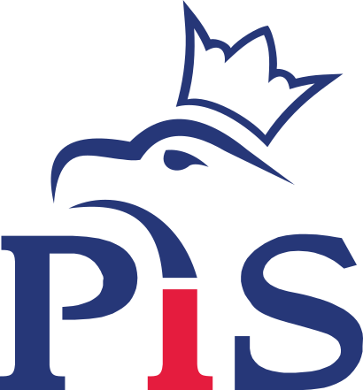
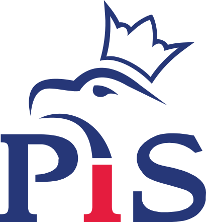
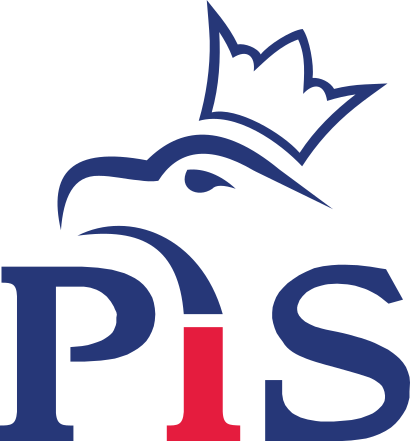
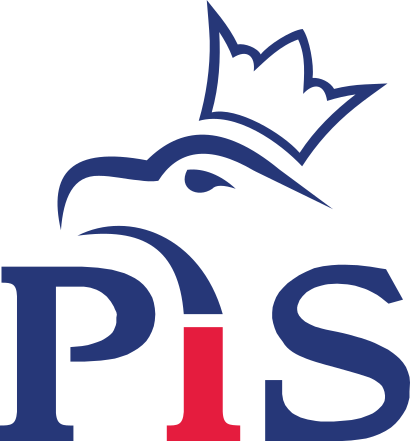

Andrzej Bernat
Kandydat PiS do Rady Powiatu Słupeckiego
 



Andrzej Bernat - urodzony w Zagórowie społecznik, historyk regionalny, harcmistrz. Od prawie 20-stu lat piastujący stanowisko dyrektora szkoły podstawowej im. Michała Okurzałego w Zagórowie. Prezes Fundacji Zagórowian Pro-Memoria. Jeden z głównych organizatorów finału Wielkiej Orkiestry Świątecznej Pomocy w Zagórowie. Współorganizator Zagórowskiego Pikniku Historycznego. Od lat zaangażowany jest w promocję i rozwój swojej małej ojczyzny m.in. poprzez upamiętnianie poległych w obronie ojczyzny Zagórowian. Wielokrotnie nagradzany za swoją pracę na rzecz innych.
Dzięki mojemu doświadczeniu w pracy w oświecie, będę wspierał działania na recz rozwoju szkół na terenie naszej gminy.
Jako radny powiatowy będę angażował się w działania mające na celu promocję regionu oraz lokalnych przedsiębiorców.
Jednym z piorytetów mojej pracy będzie poprawa bezpieczeństwa w naszej gminie, ze szczególnym uwzględnieniem drogi Zagórów - Ląd.
Postaram się przywrócić zagórowski sport na należne mu miejsce poprzez wspieranie klubów oraz organizację zawodów sportowych